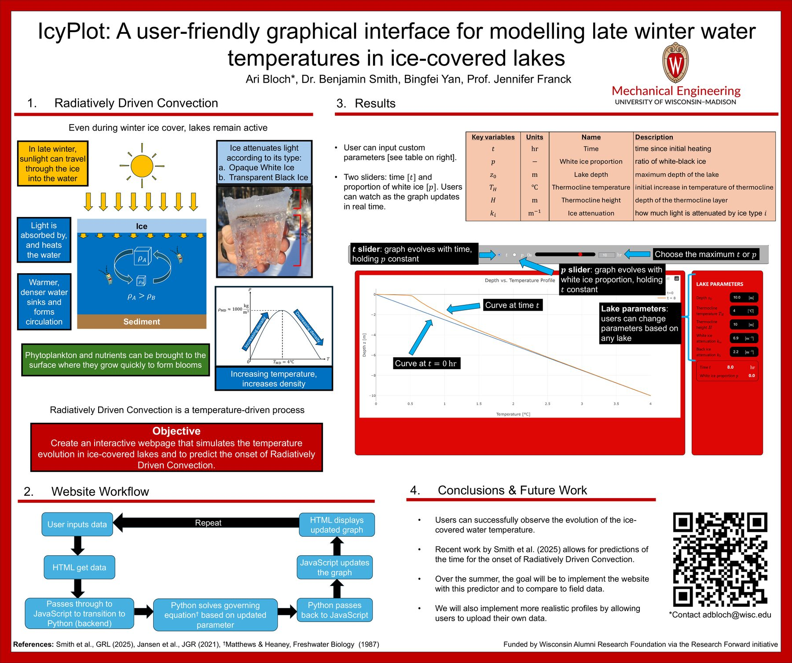

IcyPlot: modeling late-winter water temperature in ice-covered lakes
In late winter, sunlight passes through lake ice and heats the water just beneath it. Because water is densest near 4 °C, that warmer water sinks and drives convection that can lift phytoplankton and nutrients toward the surface. I built an interactive web tool that predicts how the under-ice temperature profile evolves.
- Implemented the Matthews & Heaney (1987) analytical radiation-damming solution in Python, with Beer-Lambert light attenuation through white and black ice.
- Verified it against a finite-difference solver I wrote, tracking down numerical underflow at depth, mismatched attenuation conventions between sources, and the time-step stability limit.
- Built the web interface (Python backend, HTML/JavaScript front end): users set lake depth, thermocline, and ice properties, then scrub time or ice composition with sliders and watch the profile update.
- Presented at the 2026 UW-Madison Undergraduate Research Symposium. Funded by WARF through the Research Forward initiative.
- For my numerical methods final project (EMA 471), wrote 1D and 2D finite-difference solvers for the same problem, including an upwind scheme for advection and time-step and mesh convergence studies, and confirmed they match the analytical solution. Read the report (PDF)
With Dr. Benjamin Smith, Bingfei Yan, and Prof. Jennifer Franck.

